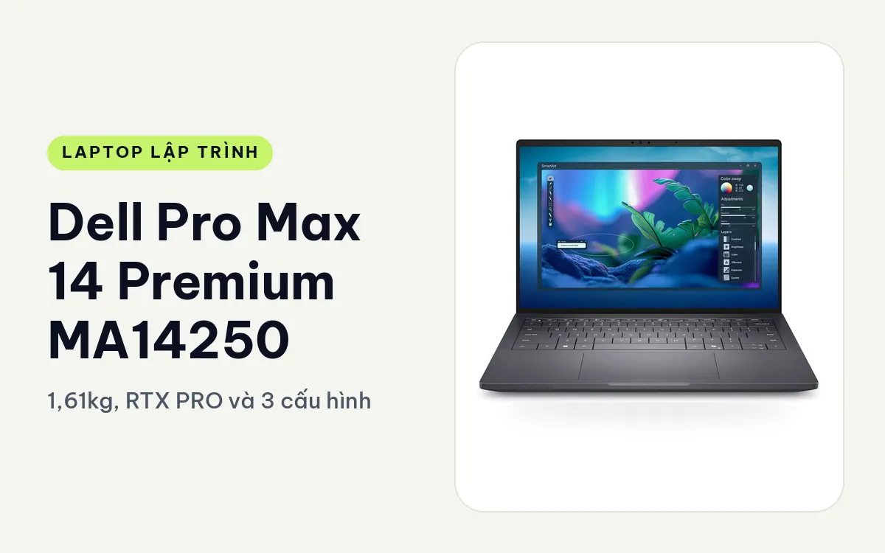
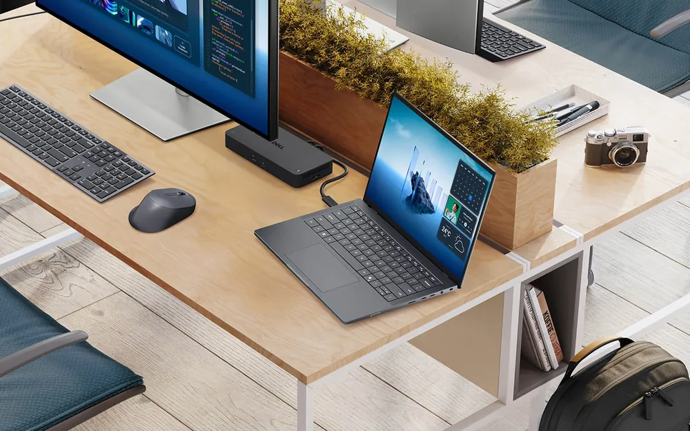
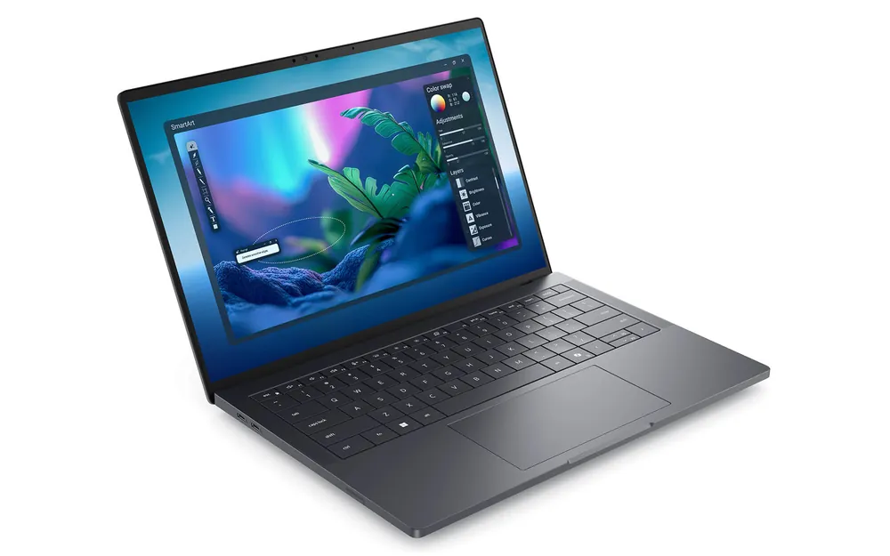
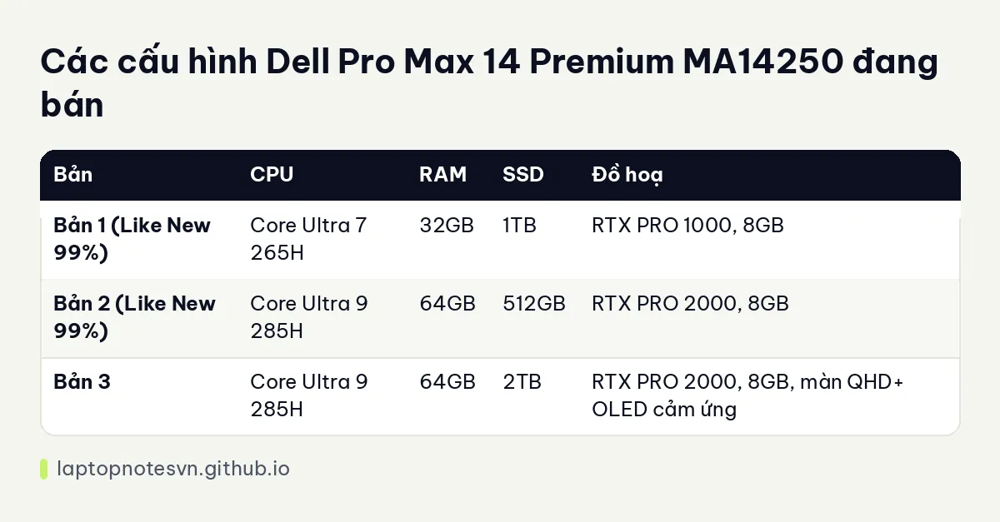

Dell Pro Max 14 Premium MA14250 cho lập trình - 1,61kg, RTX PRO và 3 cấu hình

Dell Pro Max 14 Premium MA14250 là nhánh cao cấp của máy trạm 14 inch Dell. So với bản MC cùng cỡ, Premium nhẹ hơn, pin lâu hơn, có Thunderbolt 5 và tuỳ chọn màn OLED cảm ứng, đổi lại RAM bị hàn trên bo mạch. Máy có 3 cấu hình, cả ba đều có card RTX PRO.
Người hợp nhất là dev hay di chuyển nhưng vẫn cần card đồ hoạ chuyên nghiệp, ví dụ làm AI, data hoặc dựng đồ hoạ khi đi công tác và gặp khách hàng.
Thiết kế, gọn và có nhiều cổng nhanh
Kích thước máy 310.6 x 212,46mm, dày khoảng 18.91 đến 19,72mm. Nhánh MC dày từ 14.79 đến 24,65mm, nên chỗ dày nhất của Premium mỏng hơn MC khá nhiều. Khoảng dày hẹp, chỉ chênh chưa tới 1mm giữa chỗ mỏng và chỗ dày, nên máy nhìn gọn và bỏ vừa túi laptop thông thường dễ hơn.

Về cổng, máy có 2 cổng Thunderbolt 5 và 2 cổng Thunderbolt 4, thêm khe thẻ microSD và jack tai nghe 3,5mm. Thunderbolt 5 thích hợp khi cắm card ngoài, ổ NVMe ngoài hoặc dock tốc độ cao. Trang sản phẩm có nhắc HDMI 2.1 nhưng không liệt kê RJ45 cho bản này, nên nếu cần mạng dây thì nên chuẩn bị dock.
RAM của máy hàn trên bo mạch, không nâng được. Vì thế phải chọn đúng dung lượng ngay lúc mua, điểm này khác hẳn nhánh MC dùng LPCAMM2.
Điều này quan trọng với người ngồi nhiều nơi: bàn làm việc ở công ty, quán cà phê, phòng họp khách hàng. Thunderbolt 5 cho phép cắm một dock duy nhất và có màn hình ngoài, ổ đĩa, mạng dây qua một dây. Về bàn phím và vỏ, trang sản phẩm không mô tả chất liệu cụ thể, nên mình không nêu thêm.
Mang đi hằng ngày
Máy nặng 1,61kg, pin 72Wh cho thời lượng ghi nhận khoảng 8 đến 10 giờ. Máy hỗ trợ ExpressCharge, sạc được 80% pin trong 30 phút. Đây là điểm đáng giá khi đi công tác: cắm sạc trong lúc đi ăn, quay lại là pin đã đầy phần lớn.

So với mức 1,83kg của Dell Pro Max 14 MC14250, Premium nhẹ hơn khoảng 0,2kg và pin dùng lâu hơn. Con số 8 đến 10 giờ là mức dùng nhẹ, còn chạy card RTX PRO thì chắc chắn ngắn hơn.
Có 3 cấu hình
Ba bản khác nhau ở chip, RAM, card và ổ, hai bản đầu là máy Like New 99%.

| Bản | CPU | RAM | SSD | Đồ hoạ |
|---|---|---|---|---|
| Bản 1 (Like New 99%) | Core Ultra 7 265H | 32GB | 1TB | RTX PRO 1000, 8GB |
| Bản 2 (Like New 99%) | Core Ultra 9 285H | 64GB | 512GB | RTX PRO 2000, 8GB |
| Bản 3 | Core Ultra 9 285H | 64GB | 2TB | RTX PRO 2000, 8GB, màn QHD+ OLED cảm ứng |
Bản 1, Core Ultra 7 265H / 32GB / 1TB, RTX PRO 1000
Bản này là điểm vào của dòng Premium. 32GB RAM hàn đủ cho Docker Compose, Android Studio, máy ảo vừa và IDE nặng. RTX PRO 1000 8GB hỗ trợ CUDA, hợp thử mô hình nhỏ, xử lý ảnh và học máy ở mức vừa. Ổ 1TB thoáng cho hầu hết dự án.
Đây là bản nên chọn nếu bạn là dev full-stack hoặc mobile muốn máy nhẹ, có card để thử AI, không cần thêm RAM. Vì RAM không nâng được, nên nếu từng dùng quá 32GB thì cân nhắc bản 2.
Bản 2, Core Ultra 9 285H / 64GB / 512GB, RTX PRO 2000
Chip Ultra 9 mạnh hơn cùng 64GB RAM và RTX PRO 2000 8GB tạo thành cấu hình nặng nhất về sức tính. Hợp data science, máy ảo song song, build lớn và dựng đồ hoạ. Điểm đáng lưu ý là ổ chỉ 512GB, hơi nhỏ so với RAM 64GB, nên dữ liệu lớn phải để ở ổ ngoài hoặc NAS.
Tuy nhiên đây cũng là bản đã qua sử dụng Like New 99%, nên phù hợp nếu bạn cần cấu hình cao mà muốn tiết kiệm. Chi tiết về mức RAM xem ở bài lập trình viên cần bao nhiêu RAM.
Bản 3, Core Ultra 9 285H / 64GB / 2TB, RTX PRO 2000, màn QHD+ OLED cảm ứng
Cùng cấu hình sức tính như bản 2, nhưng ổ 2TB và màn QHD+ OLED cảm ứng. Hợp người vừa code vừa làm đồ hoạ, UI/UX, chỉnh ảnh hoặc video, nơi màu sắc quan trọng. Dev AI cũng đủ chỗ cho dataset và nhiều image Docker. Màn OLED thường tốn pin hơn khi sáng cao, nên thời lượng thực tế có thể thấp hơn mức 8 đến 10 giờ.
Cả ba bản dùng chung thân máy và pin, nên điểm cần cân nhắc chính là dung lượng RAM và dung lượng ổ. Vì RAM hàn nên đừng mua thiếu với ý nghĩ nâng sau. Ổ SSD thì khác, bạn có thể dùng ổ ngoài qua Thunderbolt để bù.
Nên chọn bản nào
Dev web, mobile, backend muốn máy nhẹ có card thì chọn bản 1. Làm data, máy ảo song song và cần sức tính tối đa trong thân 14 inch thì bản 2, nhớ dự phòng ổ ngoài. Muốn ổ lớn và màn OLED cho công việc đồ hoạ thì bản 3.
Nếu bạn ngồi bàn là chính và cần card mạnh hơn, hãy xem Dell Pro Max 16 Premium, có tới RTX PRO 3000 12GB. Còn nếu muốn RAM nâng được, chọn nhánh MC thay vì Premium.
Đăng ngày 08/11/2026